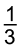
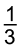
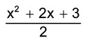
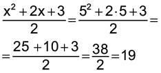
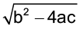
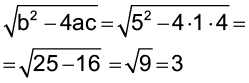
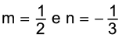
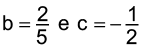
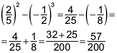
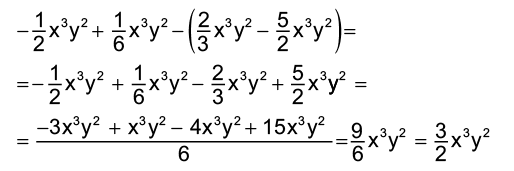

Introdução à unidade
Nesta unidade, retomamos o estudo da álgebra iniciado no 7.º ano. Faremos um aprofundamento nessa área, iniciando com os conceitos de monômios e polinômios.
De acordo com Tinoco (2008, p. 4),
Considerando o relevante papel da álgebra no currículo, suas várias dimensões e a não compreensão pelos estudantes dos conceitos e procedimentos mais ligados a esse tópico da Matemática, pode-se questionar a função do tecnicismo algébrico no seu ensino.
Este tecnicismo está estreitamente ligado à álgebra como estudo de estruturas, mas sua importância, num currículo do Ensino Fundamental, está em ser ferramenta para contemplar as demais funções da álgebra: generalizar a aritmética, resolver problemas e relacionar variáveis. Um aluno compreenderá tanto mais essa importância, na medida em que utiliza essa ferramenta em tarefas significativas, nas quais se faz necessário aprimorar esses procedimentos.
A seguir, relacionamos os objetivos que se pretende atingir ao estudar os conceitos desta unidade.
Capítulo 1 – Expressões algébricas
Objetivos:
- Utilizar a linguagem simbólica para tornar mais simples o enunciado de situações-problema.
- Compreender que toda expressão representada por símbolos matemáticos, que contenham variáveis, são chamadas de expressões algébricas ou literais.
- Calcular o valor numérico de uma expressão algébrica quando são atribuídos valores à variável.
Capítulo 2 – Monômios
Objetivos:
- Reconhecer monômios semelhantes.
- Realizar operações de adição, subtração, multiplicação, divisão e potenciação envolvendo monômios.
Capítulo 3 – Polinômios
Objetivos:
- Identificar um polinômio como sendo uma adição algébrica de monômios.
- Nomear adequadamente um polinômio como monômio, binômio, trinômio e polinômio de acordo com a sua quantidade de termos.
- Realizar adições algébricas com polinômios.
- Realizar multiplicações entre polinômios.
- Realizar a divisão de um polinômio por um monômio.
Capítulo 4 – Sequências
Objetivo:
- Identificar sequência recursiva e não recursiva.
Probabilidade e estatística –Interpretação e construção de gráficos
Objetivo:
- Interpretar e construir gráficos de linhas, barras e colunas.
Orientações específicas
Na abertura da unidade, propomos uma atividade para que os alunos relembrem alguns conceitos de álgebra estudados no 7.º ano. A situação-problema proposta pode ser encontrada no Papiro de Rhind. Caso queira obter mais informações sobre esse papiro, que se encontra no Museu Britânico em Londres, você pode acessar o site: https://cutt.ly/tHS82DY. Proponha uma pesquisa aos alunos para verificar outros problemas que constam nesse papiro.
A história da Matemática é importante para que os alunos percebam como esse conhecimento foi se desenvolvendo.
Veja, por exemplo, o problema 63 que se encontra no Papiro de Rhind, apresentado na abertura da unidade. Nele é solicitado que sejam repartidos 700 pães entre quatro pessoas, sendo que as quantidades que cada pessoa deve receber estão na proporção prolongada 2/3 : 1/2 : 1/3 : 1/4. A solução é encontrada realizando o quociente de 700 pela soma das proporções, ou seja:

Portanto, os valores procurados são  de 400, de 400,  de 400 e
de 400, de 400,  de 400 e  de 400. Note que
de 400. Note que  de 400 e
de 400 e  de 400 não correspondem a números inteiros, mas que, quando somados com as demais quantidades, resultam em 700. No Papiro de Rhind, são numerosos os problemas sobre pães e cerveja. Caso julgue interessante, apresente aos alunos mais esse problema.
de 400 não correspondem a números inteiros, mas que, quando somados com as demais quantidades, resultam em 700. No Papiro de Rhind, são numerosos os problemas sobre pães e cerveja. Caso julgue interessante, apresente aos alunos mais esse problema.

|
Principais habilidades da BNCC |
EF08MA06 |
|
Competências |
CE1, CE8, CG1, CG9 |
Iniciamos este capítulo envolvendo geometria e álgebra. Conceitos como perímetro, área e volume dão significado ao uso da álgebra em várias situações. Para que os alunos possam representar as expressões algébricas e calcular o seu valor numérico, relembre com eles os conceitos estudados no 7.º ano para expressões algébricas, como o significado de variável.


Comente com os alunos que quando a incógnita deixa de ser um número desconhecido, basta substituí-la na expressão algébrica com o seu valor e resolver a expressão do mesmo modo que as expressões numéricas.
Encontre soluções
Atividade 6
0,1t2 - 4t + 90 = 0,1 ∙ (30)2 - 4 ∙ 30 + 90 = 0,1 ∙ 900 - 120 + 90 = 90 - 120 + 90 = 60
60 batimentos por minuto.
Atividade 7
- y5 - y + 6, para y = 2;
25 - 2 + 6 = 32 - 2 + 6 = 36
- x4 - 7x + 1, para x = -1;
(-1)4 - 7 ∙ (-1) + 1 = 1 + 7 + 1 = 9
- , para x = 5;

- , para a = 1; b = 5 e c = 4

- m + n, para 

- b2 - c3, para 


|
Principais habilidades da BNCC |
EF08MA08 |
|
Competências |
CE8, CG9 |
No estudo de monômios, é importante os alunos perceberem que uma expressão algébrica constituída pela multiplicação entre números e variáveis é denominada monômios e que nas operações só podemos agrupar monômios que são semelhantes.
Comente com os alunos que um caso corriqueiro de monômios é da forma abc. Podemos ver que abc é a parte literal e, nesse caso, o coeficiente numérico não está claro, mas está presente que é o número 1. Poderíamos então reescrever esse monômio na forma 1abc e nesse caso não é um monômio semelhante, apenas outra forma de representar.
Comente com os alunos que os números conhecidos (12, 13, 120 e 1000, por exemplo) são considerados monômios, assim como apenas as incógnitas (x, y, z, a, b, c, por exemplo).

Encontre soluções
Atividade 4
- -2xy - (-5xy + 3xy - 8xy) - (xy + 4xy) =
= -2xy + 5xy - 3xy + 8xy - xy - 4xy = 3xy
3xy = 3 ∙ 2 ∙ (-3) = -18
- 7x2y + 8x2y - (12x2y - 10x2y + 2x2y) - x2y =
= 7x2y + 8x2y - 12x2y + 10x2y - 2x2y - x2y = 10x2y
=10x2y = 10 ∙ 22 ∙ (-3) = -120
- 

Multiplicação de monômios
Atividade 2
Na multiplicação de monômios, multiplicamos os coeficientes e a parte literal entre si, sendo que na parte literal utilizamos a propriedade da multiplicação de potências de mesma base. Em uma multiplicação de potências de mesma base, repete-se a base e adicionam-se os expoentes.


Divisão entre monômios
Atividade 1
Para se dividir dois monômios com o divisor diferente de zero, devemos realizar a divisão entre os coeficientes e entre as partes literais entre si, lembrando que na parte literal utilizamos a propriedade da divisão de potências de mesma base, na qual repete-se a base e subtraem-se os expoentes.
Encontre soluções
Atividade 2
(75x3y2) : 5x = 15x2y2
Atividade 3
78xy : 6 = 13xy
Atividade 4
98x7y5z2 : 7x4y3z = 14x3y2z
Atividade 5

Perímetro: 3 ∙ 2y = 6y
Potenciação de monômios
Atividade 1
Para determinar a potência de um monômio, calculamos a potência dos coeficientes e a potência da parte literal, lembrando que na parte literal utilizamos a propriedade da potência de uma potência, na qual repete-se a base e multiplicam-se os expoentes.


|
Principais habilidades da BNCC |
EF08MA06 |
|
Competências |
CE8, CG9 |
Para o estudo de polinômios, os alunos deverão perceber que estes são adições algébricas de monômios, sendo que só podemos agrupar monômios que são semelhantes.
Na situação proposta, caso ache interessante, você poderá construir com os alunos os esqueletos dos sólidos geométricos e solicitar que façam a representação do desenho no caderno, atribuindo a cada um dos segmentos uma variável diferente de acordo com as medidas utilizadas. Os alunos poderão ser organizados em grupos, sendo que cada grupo ficará responsável pela construção de um determinado sólido especificado por você. Ao final, cada grupo poderá apresentar as conclusões para a turma.
Atividade 2
Para se calcular o perímetro, deve-se adicionar as medidas de todos os lados de um polígono, lembrando que só podemos agrupar os monômios que são semelhantes, ou seja, que possuem a mesma parte literal.
Relembre os alunos que, quando um polinômio possui apenas um termo, ele é chamado de monômio, quando os polinômios que possuem somente dois monômios são chamados de binômios. Já os trinômios são polinômios que possuem três monômios.
Confira abaixo as operações entre polinômios que iremos apresentar:
- Adição e subtração algébrica de Polinômios.
- Multiplicação de Polinômios.
- Divisão de um polinômio por um monômio.

Encontre soluções
Atividade 1
- (y4 + 3y - 8) + (y4 - 5y + 3) = y4 + 3y - 8 + y4 - 5y + 3 = 2y4 - 2y - 5
- (-10ab + 6b) + (-15b - 2ab) = -10ab + 6b - 15b - 2ab = -12ab - 9b
- (8x2 + 3x - 11) + (-1 + 2x2 - 6x) = 8x2 + 3x - 11 - 1 + 2x2 - 6x = 10x2 - 3x - 12
- (- 5b + 2c) - (-7c + 15b) = - 5b + 2c + 7c - 15b = - 20b + 9c
- (12xy - 13x + 5y) - (-10y + 3xy) = 12xy - 13x + 5y + 10y - 3xy = 9xy - 13x + 15y
Atividade 2
- Figura I: x + 1 + x + 1 + x + 1 + x + 1 = 4x + 4.
Figura II: 3x + 2 + 2x - 5 + 3x + 2 + 2x - 5 = 10x - 6.
Figura III: 4x + 3 + 3x + 1 + 4x + 3 + 3x + 1 = 14x + 8.
Figura IV: 4x - 2 + 3x + 5x - 6 + 3x = 15x - 8.
- Figura I: 4x + 4 = 4 ∙ 5 + 4 = = 20 + 4 = 24 cm.
Figura II: 10x - 6 = 10 ∙ 5 - 6 = 50 - 6 = 44 cm.
Figura III: 14x + 8 = 14 ∙ 5 + 8 =
= 70 + 8 = 78 cm.
Figura IV: 15x - 8 = 15 ∙ 5 - 8 =
= 75 - 8 = 67 cm.
Atividade 3
- A + B = (y2 + 3y - 7) + (- 4y2 - y + 1) = y2 + 3y - 7 - 4y2 - y + 1 =
= -3y2 + 2y - 6 - A + C = y2 + 3y - 7 + y + 6 = = y2 + 4y - 1
- B - C = - 4y2 - y + 1 - (y + 6) = - 4y2 - y + 1 - y - 6 =
= - 4y2 - 2y - 5 - A + B + C = y2 + 3y - 7 - 4y2 - y + 1 + y + 6 =
= -3y2 + 3y - C - A = y + 6 - (y2 + 3y - 7) = y + 6 - y2 - 3y + 7 =
= -y2 - 2y + 13 - A + B - C = y2 + 3y - 7 - 4y2 - y + 1 - (y + 6) = y2 + 3y - 7 - 4y2 - y + 1 - y - 6 =
= -3y2 + y - 12 - A - B - C = y2 + 3y - 7 -
(- 4y2 - y + 1) - (y + 6) = y2 + 3y - 7 + 4y2 + y - 1 - y - 6 = = 5y2 + 3y - 14 - A - B = y2 + 3y - 7 - (- 4y2 - y + 1) = y2 + 3y - 7 + 4y2 + y - 1=
= 5y2 + 4y - 8


Encontre soluções
Atividade 2
- A ∙ B = (-x + 2)(4x - 5) =
- 4x2 + 5x + 8x - 10 =
= - 4x2 + 13x - 10 - B ∙ C = (4x - 5)( -x - 7) =
= - 4x2 - 28x + 5x + 35 =
= - 4x2 - 23x + 35 - A (B + C) = (-x + 2)(4x - 5 - x - 7) = (-x + 2)(3x - 12) = -3x2 + 12x + 6x - 24 =
= -3x2 + 18x - 24 - B (A - C) = (4x - 5)(-x + 2 + x + 7) = (4x - 5) ∙ 9 =
= 36x - 45 - C (A + B) = (-x - 7)( -x + 2 + 4x - 5) =(-x - 7)( 3x - 3) =
= - 3x2 + 3x - 21x + 21 =
= -3x2 - 18x + 21 - A ∙ B - B ∙ C = (-x + 2)
(4x - 5) - (4x - 5)( -x - 7) =
= (- 4x2 + 5x + 8x - 10) -
(- 4x2 - 28x + 5x + 35) =
= - 4x2 + 5x + 8x - 10 + 4x2 + 28x - 5x - 35 = 36x - 45
Atividade 3
(2x + 1)(3x + 4) - (x + 1)
(x - 1) = 6x2 + 8x + 3x + 4 - (x2 - x + x - 1) =
= 6x2 + 8x + 3x + 4 - x2 + x - x + 1 = 5x2 + 11x + 5
Atividade 4
- (x + 3)(x + 2) = x2 + 2x + 3x + 6 = x2 + 5x + 6
- (b - 5)(b3 + 2c) = b4 + 2bc - 5b3 - 10c
- (y4 + 3)(y4 - 3) = y8 - 3y4 + 3y4 - 9 = y8 - 9
- (ab + 1)(a - b) = a2b - ab2 + a - b
- (-3xy + x)(y - 4) = -3xy2 + 12xy + xy - 4x = -3xy2 + 13xy - 4x
Atividade 5
- (x + 4)2 = (x + 4)(x + 4) = x2 + 4x + 4x + 16 = x2 + 8x + 16
- (9 - b)2 = (9 - b)(9 - b) = 81 - 9b - 9b + b2 = 81 - 18b + b2
- (3y + 5)2 = (3y + 5)(3y + 5) = = 9y2 + 15y + 15y + 25 =
= 9y2 + 30y + 25 - (x - y)3 = (x - y)(x - y)(x - y) = (x2 - 2xy + y2)(x - y) = x3 - x2y - 2x2y + 2xy2 + xy2 - y3 = x3 - 3x2y + 3xy2 - y3
Atividade 6
(x + 1)(x + 1)(2x + 3) = (x2 + x + x + 1)(2x + 3) = (x2 + 2x + 1)(2x + 3) =
= 2x3 + 3x2 + 4x2 + 6x + 2x + 3 = 2x3 + 7x2 + 8x + 3
Encontre soluções
Atividade 3
- A + B + C = -36x8y7 + 24x6y5 + 12x8y7 - 4x6y5 + 2x6y5 =
= -24x8y7 + 22x6y5
A - B + C = -36x8y7 + 24x6y5 - (12x8y7 - 4x6y5) + 2x6y5 =
= -36x8y7 + 24x6y5 - 12x8y7 + 4x6y5 + 2x6y5 =
= - 48x8y7 + 30x6y5
- B ∙ C = (12x8y7 - 4x6y5) ∙ (2x6y5) = 24x14y12 - 8x12y10
- A : C = (-36x8y7 + 24x6y5) : (2x6y5) = -18x2y2 + 12
- B : C = (12x8y7 - 4x6y5) : (2x6y5) = 6x2y2 - 2
- (A + B) : C= (-36x8y7 + 24x6y5 + 12x8y7 - 4x6y5) : (2x6y5) = (-24x8y7 + 20x6y5) : (2x6y5) = -12x2y2 + 10


|
Principais habilidades da BNCC |
EF08MA10, EF08MA11, EF08MA23 |
|
Competências |
CG1, CG9, CE2, CE5, CE6, CE8 |
No início deste capítulo, são apresentadas algumas sequências para que o aluno possa identificar os seus padrões. O objetivo, neste momento, é promover uma discussão sobre os padrões observados.
Antes de iniciar o trabalho sobre sequências recursivas e sequências não recursivas, procure identificar os conhecimentos prévios dos alunos sobre o tema. Apresente a situação de sequência figural recursiva, ou seja, cada termo da sequência depende do termo anterior. Se julgar oportuno, questione os alunos sobre mais figuras e se ela terá um fim. Em seguida, é proposto a construção de um fluxograma que representa a situação.
Para exemplificar uma sequência não recursiva, utilizamos um exemplo que pode gerar interesse nos alunos, os Fractais. O fractal apresentado já foi estudado no ano anterior, retomamos aqui explorando o conceito de recursividade ou não. Comente com a turma e, se possível, mostre fotos de outros fractais retirados da internet. Pode-se também, elaborar com eles um cartão fractal e solicitar que descrevam a sequência representada.
Nas sequências numéricas, espera-se que os alunos sejam capazes de reconhecer os padrões numéricos desses conceitos que já foram estudados nos anos anteriores. Por isso, pretende-se nesse momento, fazer um resgate dos conhecimentos dos alunos.
O trabalho com sequências permite que os alunos desenvolvam um olhar para determinar os padrões e, posteriormente, buscarem por uma generalização ou uma relação algébrica que mostrará o elemento do padrão que ocupará qualquer lugar da sequência. O pensamento algébrico pode contribuir enormemente para o desenvolvimento do pensamento computacional. Esses modelos de atividades permitirão que os alunos, futuramente, possam fazer abstrações com base em situações concretas, generalizando, organizando e representando de maneira adequada as suas ideias matemáticas.
Objetivos:
- Identificar a regularidade de uma sequência numérica e figural, expressando o seu padrão por meio da linguagem algébrica e de fluxogramas.
- Encontrar um termo futuro da sequência por meio do seu padrão de formação.
- Reconhecer em figuras geométricas a regularidade de uma sequência numérica.
Atividade 2

Sérgio Bonfim dos Santos

Encontre soluções
Nesta seção, serão apresentadas as atividades a serem resolvidas de forma individual ou em duplas. Oriente os alunos a descobrirem a sentença algébrica em cada situação, dê o tempo suficiente para que possam realizar a atividade que foi solicitada. Observe os alunos enquanto registram as respostas auxiliando-os quando necessário. As questões desta seção permitem averiguar se os alunos utilizam os conhecimentos matemáticos já obtidos para auxiliá-los, ampliando as diferentes categorias de raciocínio lógico-matemático, o senso de investigação e, especialmente, a capacidade de argumentar, de modo a contemplar a Competência específica de Matemática 2.
Probabilidade e estatística – Interpretação e construção de gráficos
Nesta seção, você pode aproveitar o momento para refazer os gráficos propostos com outros formatos, utilizando uma planilha eletrônica LibreOffice (software gratuito), a fim de que os alunos avaliem quais informações são mais relevantes em cada um deles e qual propicia uma melhor leitura dos dados.

Atividade 1
Nesta atividade, abordamos o tema de educação ambiental. Para otimizar o estudo e aprendizagem dos alunos, promova um debate entre eles após realizarem a pesquisa a respeito do desmatamento com dados atuais e como as políticas públicas podem interferir na diminuição dos desmatamentos da Amazônia e em outras regiões do país.
Atividade 3
Comente com os alunos que mesmo estando no século XXI, ainda podemos encontrar pessoas que nunca frequentaram escolas em nosso país. Comente que o acesso a educação é um direito e deve ser assegurado pelo governo. Segundo o Estatuto da Criança e do Adolescente (ECA), “a criança e o adolescente têm direito à educação, visando ao pleno desenvolvimento de sua pessoa, preparo para o exercício da cidadania e qualificação para o trabalho”. É interessante comentar que há algum tempo, é cada vez mais utilizado o termo “analfabeto digital”, no qual o cidadão não tem conhecimento a respeito das novas tecnologias digitais como smartphones e tablets.


Relembre
Atividade 1
(5x - 1)(3x + 1)2 = (5x - 1)(9x2 + 6x + 1) = 45x3 + 30x2 + 5x - 9x2 - 6x - 1 . O coeficiente é 45.
Atividade 2
(x + 4y)(x - 4y) + 8x2 - 11y2 =
= x2 - 4xy + 4xy - 16y2 + 8x2 - 11y2 =
= 9x2 - 27y2 .
A soma dos coeficientes é -18.
Atividade 3
- - 5xy(9x + 6y) - 10x2y + 13xy2 =
= - 45x2y - 30xy2 - 10x2y + 13xy2 = - 55x2y - 17xy2 - (3a + b)(a - b) + 8a2 - 14ab - 9b2 = 3a2 - 3ab + ab - b2 + 8a2 - 14ab - 9b2 =
= 11a2 - 16ab - 10b2 - (-10x4y6 + x2y3) : (xy) + 8x3y5 =
= -10x3y5 + xy2 + 8x3y5 =
= - 2x3y5 + xy2
Atividade 4
(x + y)(x2 + y2)(x - y) =
= (x + y)(x - y)(x2 + y2) =
= (x2 + xy - xy - y2)(x2 + y2) =
= (x2 - y2)(x2 + y2) =
= x4 + x2y2 - x2y2 - y4 = x4 - y4
Atividade 6
(2a - 3ab)2 = (2a - 3ab)(2a - 3ab) =
= 4a2 - 6a2b - 6a2b + 9a2b2 =
= 4a2 - 12a2b + 9a2b2.
A expressão que deve ser somada é 3a2 + 3a2b2 .
Atividade 7
- M + N + P = x8 + y6 - 5x8 - 8y6 + 3x = - 4x8 - 7y6 + 3x
- M - N + P = x8 + y6 - (- 5x8 - 8y6) + 3x = x8 + y6 + 5x8 + 8y6 + 3x = 6x8 + 9y6 + 3x
- M ∙ N = (x8 + y6)(- 5x8 - 8y6) =
= - 5x16 - 13x8y6 - 8y12 - N ∙ P = (- 5x8 - 8y6)(3x) =
= -15x9 - 24xy6